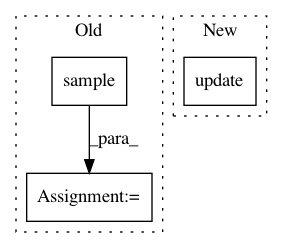

a0021cb982c25923a75cd3a1eeaee00058f2cdbb,pixyz/distributions/distributions.py,DistGraph,sample,#DistGraph#Any#Any#Any#Any#Any#,132
Before Change
input_dict = self._get_local_input_dict(values, self.graph.pred[var], var)
option = sample_option
option.update(self.node_option(var))
values[var] = self._get_local_output_value(var, dist.sample(input_dict, **option))
result_dict = delete_dict_values(values, self.marginalize_list)
if return_all:
output_dict = dict(delete_dict_values(x_dict, self.input_var))
output_dict.update(result_dict)
After Change
values = get_dict_values(x_dict, self.input_var, return_dict=True)
for factor in self.factors(sorted=True):
sample = self._wrapped_sample(factor, values, sample_option)
values.update(sample)
result_dict = delete_dict_values(values, self.marginalize_list)
if return_all:
output_dict = dict(delete_dict_values(x_dict, self.input_var))
In pattern: SUPERPATTERN
Frequency: 3
Non-data size: 3
Instances
Project Name: masa-su/pixyz
Commit Name: a0021cb982c25923a75cd3a1eeaee00058f2cdbb
Time: 2020-07-27
Author: kaneko@weblab.t.u-tokyo.ac.jp
File Name: pixyz/distributions/distributions.py
Class Name: DistGraph
Method Name: sample
Project Name: uber/pyro
Commit Name: f7a56772232dcf8328261f69538e0fee9bb88d3c
Time: 2020-06-13
Author: fritzo@uber.com
File Name: pyro/contrib/epidemiology/compartmental.py
Class Name: CompartmentalModel
Method Name: _quantized_model
Project Name: masa-su/pixyz
Commit Name: 30028c6256de0cef715095e3994e396025c068d4
Time: 2020-05-04
Author: kaneko@weblab.t.u-tokyo.ac.jp
File Name: pixyz/distributions/flow_distribution.py
Class Name: InverseTransformedDistribution
Method Name: sample